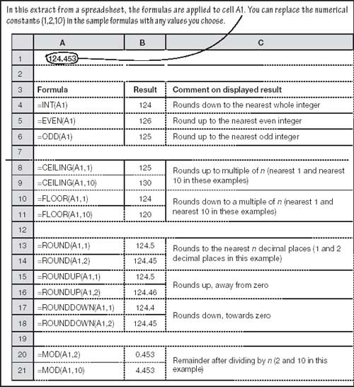
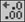

Significant accuracy
Making figures significant
A certain company’s net profit was a few cents over $18,208,371 last year. When the CEO reported the results, he described the profit as ‘just over $18.2 million’. This was more sensible than reading out the amount to the last dollar, because the audience would have been struggling to make sense of a number read to eight significant figures. The precise figure was there in an annex for anyone with particular interest to read.
Detailed figures should be calculated to an appropriately high degree of accuracy, but numbers summarized in the body of reports or given in presentations are usually better rounded. Normally, you can make the number easier to comprehend, especially for large amounts, as follows:
Round them to two or three significant figures (the first number above has eight and the second number three significant figures), and
include at most two decimal places (i.e. two digits after the point).
The combination is known as the number of effective figures. A good rule of thumb it to use as few effective figures as possible, while ensuring that relevant differences are apparent (for example, if you were describing production tolerances to one-thousandth of an inch, it would not make sense to round to the nearest half-inch). With sensible rounding, your audience can focus their attention on what you are saying, rather than on decoding complex numbers.
Maintaining accuracy
As surprising as this might sound, you can have problems with spreadsheet accuracy. Let me give you an example.
Suppose you divide 100 by 7. A spreadsheet will tell you that the answer is 14.2857142857143000... If this figure is, say, your retail price for some cog or sprocket, you will probably round up to $14.29. If you sell 1,000 units, your revenue will be $14,290.00.
The 4/5 rule
Calculators and spreadsheets generally round using the 4/5 rule. That is, values ending in four are rounded down, while those ending in five are rounded up. For example, 1.4 is rounded down to 1, while 1.5 is rounded up to 2. You will, perhaps, be in good company if you adopt this convention: for example, the European Central Bank follows it for exchange rate calculations.
The spreadsheet’s answer is a few dollars lower than the rounding-at-each-stage example. Repeat such discrepancies over thousands of items, and the amounts involved could be huge. Even one penny out of balance is too much for the grey suits – and when you project your financials using spreadsheets you often find that your figures are out by just this amount. This is because we usually format the spreadsheet to show two decimal places – but the ‘fully-accurate’ figures are retained by the spreadsheet and used in the calculations. The problem then is that the numbers look OK, but they do not appear to add up correctly, as shown in Fig. 5.2.
| Raw data, perhaps the result of a calculation | Displayed to 2 decimal places | Rounded to 2 decimal places | Rounded down | Rounded up | |
|---|---|---|---|---|---|
| Number 1 | 2.004 | 2.00 | 2.00 | 2.00 | 2.01 |
| Number 2 | 2.004 | 2.00 | 2.00 | 2.00 | 2.01 |
| Totals (not rounded) | 4.008 | 4.01 | 4.00 | 4.00 | 4.02 |
Fortunately, spreadsheets have some built-in functions that deal very effectively with this excess precision. They are shown in Fig. 5.3 and, I think, speak for themselves. Usually, the simple ROUND function is adequate. Remember that sometimes instead of rounding to the nearest amount, you need to round up or down (are you buying or selling?).
Fig 5.3. Rounding
By the way, you might come across the self-explanatory spreadsheet option Precision as displayed. As tempting as this is, I recommend against using it. This feature makes it too easy to lose control over the accuracy of your numbers.
|
| I put ‘fully-accurate’ in quotes above, because – as staggering as this might seem – computers do not handle numbers too well. My spreadsheet works with 15 significant figures only. You can test yours by keying =2/3 into a cell and then increasing the number of decimal places (click  repeatedly). I am sure that you remember from school that two-thirds is 0.66 recurring – the sixes go on forever. However, your spreadsheet will display 0.66666666666666700000....two-thirds to 15 significant figures only. This is usually not a problem for business arithmetic. If it does cause you a problem recording your profits, give some to me. |
‘A little inaccuracy sometimes saves tons of explanation.’
—Anon.
|
Apply common sense to avoid both spurious accuracy (not enough rounding) and too much rounding. Generally, you need to do your analysis and forecasting using un-rounded numbers, and then round off each value before putting them in your financial projections.
| This number, n | Rounds to | Multiply n by itself | Which rounds to |
|---|---|---|---|
| 1.5 | 2 | 2.25 | 2 |
| 2.0 | 2 | 4.00 | 4 |
| 2.4 | 2 | 5.76 | 6 |